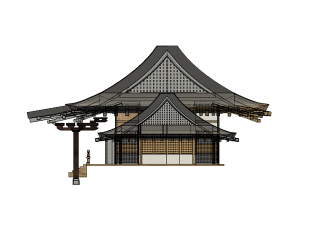
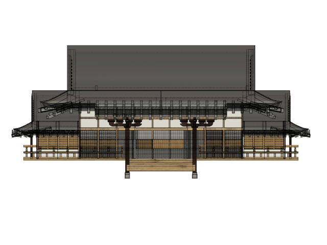
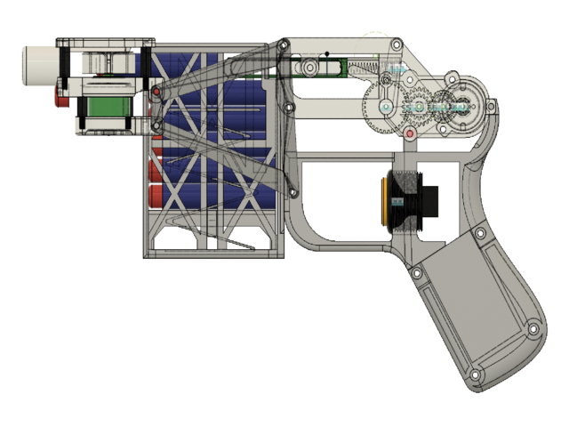

KIDA's Portfolio
関西在住の高専4年生です。メカトロ系の学科に在籍しています。
Works
特別研究 前期
2023年: 大阪天満宮の３Dモデル製作
3年次に「百年後に残したいもの」というテーマの基礎研究で、私のチームは神社を選び、残す方法として、仮想空間を用いた方法を考えました。
他メンバーには、神社の歴史を調べてもらい、私は大阪天満宮の３Dモデルを作成しました。何度も天満宮に行き、写真を撮影し、そこからスケッチを描いて具体的な構想を作るのに苦労しました。最初は時間のかかっていた設計も時間が経つうちに速く、正確にできるになり、高い設計能力を身に着けることができました。


特別研究 後期
2023年: 電動ナーフ製作
3年次に「理想の○○を作る」というテーマの特別研究で、子供が遊んでも安全な電動ナーフを製作しました。モータをPWM制御で速度調節できるようにしており、弾速の調整がしやすい仕組みになっています。

基礎研究
2024年: ロボットハンド製作
4年次に基礎研究でやわらかいものを掴むロボットハンドを製作しました。製作には主に３Dプリンタ、レーザー加工機を使用し、ハンドの爪部分にはTPU（ポリウレタン系熱可塑性エラストマー）のフィラメントで印刷し、やわらかいものも掴めるようにしました。


Skills
授業やクラブ活動、文化祭活動、趣味を含めて利用経験のあるハードウェアやソフトウェアの一覧です。
ソフトウェア 80％以上のものは累計使用時間が100時間以上のものです。


ハードウェア
- 3Dプリンタ
- レーザー加工機
- ボール盤
- Arduino
- 電子工作（ブレッドボード）
- 汎用旋盤
- フライス盤